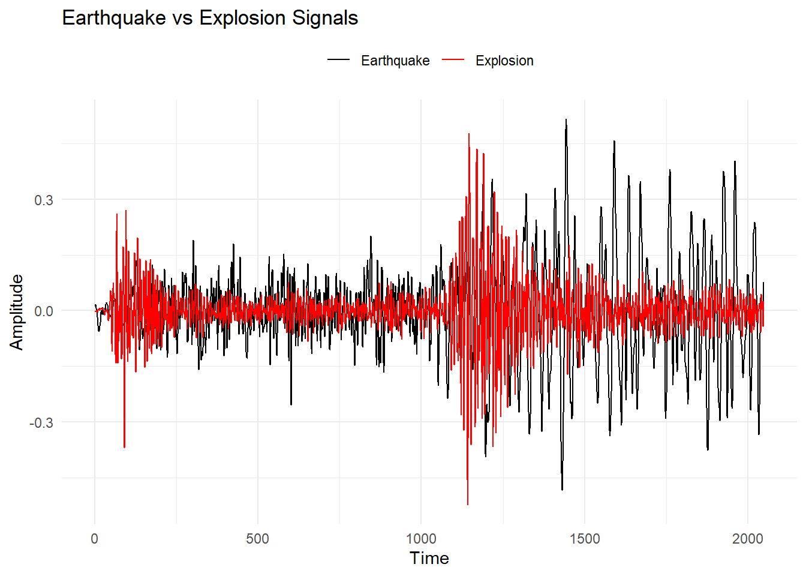

library(tidyverse)
library(astsa)
library(cowplot)主要参考书籍为Shumway和Stoffer(2017)的Time Series Analysis and Its Applications: With R Examples。
该书第五版正在制作，配套astsa包中的部分数据集会逐渐更新，所以后期也许会换成第五版内容。
该内容为第一章的习题答案，基于个人习惯，使用的大多数是tidyverse系列代码，会和之前学习笔记中的代码习惯有所不同。
提示
提示框表明这部分完全是个人理解，可能有误。
一切错误和想讨论的内容欢迎联系邮箱(zhoubolin0404@126.com)，感谢！
1.1小节
1.1
data <- data.frame(
time = 1:length(EQ5),
Earthquake = EQ5,
Explosion = EXP6
) %>%
pivot_longer(
cols = c("Earthquake", "Explosion"),
names_to = "type",
values_to = "value"
)
ggplot(data, aes(x = time, y = value, color = type)) +
geom_line() +
labs(y = "Amplitude", x = "Time", title = "Earthquake vs Explosion Signals") +
scale_color_manual(values = c("black", "red")) +
theme_minimal() +
theme(legend.position = "top") +
guides(color = guide_legend(title = NULL, override.aes = list(linetype = 1)))
爆炸信号消失得更快，早期振幅更大。
1.2
(a)和(c)
set.seed(44)
s_a <- c(rep(0, 100), 10 * exp(-(101:200 - 100) / 20) * cos(2 * pi * 101:200 / 4))
x_a = s_a + rnorm(200)
decay_line_a = c(rep(0, 100), 10 * exp(-(1:100) / 20))
data_a <- as_tibble(x_a) %>%
mutate(time = 1:200, decay_line = decay_line_a)
ggplot(data_a, aes(x = time)) +
geom_line(aes(y = value), color = "black") +
geom_line(aes(y = decay_line), color = "red") +
theme_minimal()(b)和(c)
set.seed(44)
s_b = c(rep(0, 100), 10 * exp(-(101:200 - 100) / 200) * cos(2 * pi * 101:200 / 4))
x_b = s_b + rnorm(200)
decay_line_b = c(rep(0, 100), 10 * exp(-(1:100) / 200))
data_b <- as_tibble(x_b) %>%
mutate(time = 1:200, decay_line = decay_line_b)
ggplot(data_b, aes(x = time)) +
geom_line(aes(y = value), color = "black") +
geom_line(aes(y = decay_line), color = "red") +
theme_minimal()1.2小节
1.3
(a)-(c)
set.seed(44)
w = rnorm(150, 0, 1)
x = stats::filter(w, filter = c(0, -0.9), method = "recursive")[-(1:50)]
x2 = 2 * cos(2 * pi * (1:100) / 4)
x3 = x2 + rnorm(100, 0, 1)
v = stats::filter(x, rep(1, 4) / 4, sides = 1)
v2 = stats::filter(x2, rep(1, 4) / 4, sides = 1)
v3 = stats::filter(x3, rep(1, 4) / 4, sides = 1)
data <- tibble(
time = rep(1:100, 3),
x_value = c(x, x2, x3),
v_value = c(v, v2, v3),
type = rep(c(
"autoregression", "sinusoid", "sinusoid + noise"
), each = 100)
) %>%
pivot_longer(
cols = c("x_value", "v_value"),
names_to = "series",
values_to = "value"
)
ggplot(data, aes(
x = time,
y = value,
color = series,
linetype = series
)) +
geom_line() +
facet_wrap(~ type, ncol = 1) +
labs(y = "Value", x = "Time", title = "Time Series and Moving Averages") +
scale_color_manual(
values = c("x_value" = "blue", "v_value" = "red"),
breaks = c("x_value", "v_value")
) +
scale_linetype_manual(
values = c("x_value" = "solid", "v_value" = "dashed"),
breaks = c("x_value", "v_value")
) +
theme_minimal()移动平均后都变得更为平缓。
1.3小节
1.4
\[ \begin{aligned} \gamma(s,t)&=\operatorname{cov}(x_t,x_t)=\operatorname{E}[(x_s-\mu_s)(x_t-\mu_t)]\\ &=\operatorname{E}(x_sx_t)-\mu_t\operatorname{E}(x_s)-\mu_s\operatorname{E}(x_t)+\mu_s\mu_t\\ &=\operatorname{E}(x_sx_t)-\mu_t\mu_s-\mu_s\mu_t+\mu_s\mu_t\\ &=\operatorname{E}(x_sx_t)-\mu_s\mu_t \end{aligned} \]
1.5
\[ \mu_{x}=\operatorname{E}(s_t+w_t)=s_t \]
# a
set.seed(44)
s_a <- c(rep(0, 100), 10 * exp(-(101:200 - 100) / 20) * cos(2 * pi * 101:200 / 4))
data_a <- tibble(time = 1:200, s_a = s_a)
p_15a <- ggplot(data_a, aes(x = time, y = s_a)) +
geom_line() +
theme_minimal()
# b
set.seed(44)
s_b = c(rep(0, 100), 10 * exp(-(101:200 - 100) / 200) * cos(2 * pi * 101:200 / 4))
data_a <- tibble(time = 1:200, s_b = s_b)
p_15b <- ggplot(data_a, aes(x = time, y = s_b)) +
geom_line() +
theme_minimal()
plot_grid(p_15a, p_15b, ncol = 1)\[ \begin{aligned} \gamma_x(s,t)&=\operatorname{cov}(x_s,x_t)=\operatorname{E}[(x_s-\mu_s)(x_t-\mu_t)]\\ &=\operatorname{E}[(x_s-s_s)(x_t-s_t)]\\ &=\operatorname{E}(w_sw_t) \end{aligned} \]
所以有：
\[ \gamma_x(s,t)= \begin{cases} \sigma^2_w=1&s=t\\ 0&s\neq t \end{cases} \]
1.4小节
1.6
平均函数：
\[ \operatorname{E}(x_t)=\operatorname{E}(\beta_1+\beta_2t)=\beta_1+\beta_2t \]
不是常数，故不是平稳的。
\[ y_t=x_t-x_{t-1}=\beta_2+w_t-w_{t-1} \]
平均函数：
\[ \operatorname{E}(y_t)=\operatorname{E}(\beta_2+w_t-w_{t-1})=\beta_2 \]
自协方差函数：
\[ \begin{aligned} \gamma_y(h)&=\operatorname{cov}(y_{t+h},y_t)=\operatorname{cov}(\beta_2+w_{t+h}-w_{t+h-1},\beta_2+w_t-w_{t-1})\\ &=\operatorname{cov}(w_{t+h},w_t)-\operatorname{cov}(w_{t+h},w_{t-1})-\operatorname{cov}(w_{t+h-1},w_t)+\operatorname{cov}(w_{t+h-1},w_{t-1}) \end{aligned} \]
显然与\(t\)无关，结果为：
\[ \gamma_y(h)=\begin{cases} 2&h=0\\ -1&h=\pm1\\ 0&|h|\ge2 \end{cases} \]
所以\(y_t\)是平稳的。
平均函数：
\[ \begin{aligned} \operatorname{E}(v_t)&=\frac{1}{2q+1}\sum_{j=-q}^{q}(\beta_1+\beta_2t-\beta_2j)\\ &=\frac{1}{2q+1}[(2q+1)(\beta_1+\beta_2t)-\beta_2\sum_{j=-q}^{q}j]\\ &=\beta_1+\beta_2t \end{aligned} \]
自协方差函数：
先对\(v_t\)进行分解。
\[ \begin{aligned} v_t&=\frac{1}{2q+1}\sum_{j=-q}^{q}(\beta_1+\beta_2t-\beta_2j+w_{t-j})\\ &=\frac{1}{2q+1}[(2q+1)\beta_1+(2q+1)\beta_2t+\sum_{j=-q}^{q}w_{t-j}]\\ &=\beta_1+\beta_2t+\frac{1}{2q+1}\sum_{j=-q}^{q}w_{t-j} \end{aligned} \]
\[ \begin{aligned} \gamma_v(h)&=\operatorname{cov}(v_{t+h},v_t)\\ &=\operatorname{cov}(\beta_1+\beta_2(t+h)+\frac{1}{2q+1}\sum_{j=-q}^{q}w_{t+h-j},\beta_1+\beta_2t+\frac{1}{2q+1}\sum_{k=-q}^{q}w_{t-k})\\ &=\operatorname{cov}(\frac{1}{2q+1}\sum_{j=-q}^{q}w_{t+h-j},\frac{1}{2q+1}\sum_{k=-q}^{q}w_{t-k})\\ &=\frac{1}{(2q+1)^2}\sum_{j=-q}^{q}\sum_{k=-q}^{q}\operatorname{cov}(w_{t+h-j},w_{t-k}) \end{aligned} \]
需要在\(\sum_{j=-q}^{q}\)和\(\sum_{k=-q}^{q}\)中取更小的那个，所以：
\[ \gamma_v(h)=\begin{cases} \frac{1}{(2q+1)^2}(2q+1-|h|)\sigma_w^2&h=j-k\\ 0&h\neq j-k \end{cases} \]
因为\(j\)和\(k\)的取值范围都是\([-q,q]\)，所以\(|h|\le 2q\)。
1.7
自协方差函数
\[ \begin{aligned} \gamma_x(h)&=\operatorname{cov}(x_s.x_t)=\operatorname{cov}(x_{t+h},x_t)\\ &=\operatorname{cov}(w_{t+h-1}+2w_{t+h}+w_{t+h+1},w_{t-1}+2w_t+w_{t+1})\\ &\begin{aligned}= &\operatorname{cov}(w_{t+h-1},w_{t-1})+2\operatorname{cov}(w_{t+h-1},w_t)+\operatorname{cov}(w_{t+h-1},w_{t+1})+\\ &2\operatorname{cov}(w_{t+h},w_{t-1})+4\operatorname{cov}(w_{t+h},w_t)+2\operatorname{cov}(w_{t+h},w_{t+1})+\\ &\operatorname{cov}(w_{t+h+1},w_{t-1})+2\operatorname{cov}(w_{t+h+1},w_t)+\operatorname{cov}(w_{t+h+1},w_{t+1}) \end{aligned} \end{aligned} \]
所以：
\[ \gamma_x(h)=\begin{cases} 6\sigma_w^2&h=0\\ 4\sigma_w^2&|h|=1\\ \sigma_w^2&|h|=2\\ 0&|h|\ge3 \end{cases} \]
自相关函数
\[ \rho_x(h)=\frac{\gamma_x(h)}{\gamma_x(0)}=\begin{cases} 1&h=0\\ \frac{2}{3}&|h|=1\\ \frac{1}{6}&|h|=2\\ 0&|h|\ge3 \end{cases} \]
set.seed(44)
w_17 <- rnorm(1050)
x_17 <- stats::filter(w_17,
method = "convolution",
filter = c(1, 2, 1),
sides = 2)[-(1:50)]
acf1(x_17, max.lag = 5, gg = T)
1.8
\[ \begin{aligned} x_t&=\delta+x_{t-1}+w_t\\ &=\delta+(\delta+x_{t-2}+w_{t-1})+w_t\\ &=\delta j+w_{t-j}+\sum_{k=t-j+1}^tw_k\\ &=\delta t+\sum_{k=1}^tw_k \end{aligned} \]
均值函数
\[ \begin{aligned} \operatorname{E}x_t=\operatorname{E}(\delta t+\sum_{k=1}^tw_k)=\delta t \end{aligned} \]
自协方差函数
\[ \begin{aligned} \gamma_x(s,t)&=\operatorname{cov}(x_s,x_t)=\operatorname{E}\{(x_s-\mu_s)(x_t-\mu_t)\}\\ &=\operatorname{E}(\sum_{j=1}^sw_j\sum_{k=1}^tw_k)\\ &=\operatorname{min}(s,t)\sigma_w^2 \end{aligned} \]
均值函数和自协方差函数都随\(t\)变化，所以不平稳。
\[ \rho_x(t-1,t)=\frac{(t-1)\sigma_w^2}{\sqrt{(t-1)\sigma_w^2}\sqrt{t\sigma_w^2}}=\sqrt{\frac{t-1}{t}} \]
当\(t\to\infty\)，\(\rho_x(t-1,t)\to0\)，说明该时间序列变化逐渐变缓，\(x_t\)近似于\(x_{t-1}\)。
\[ \nabla x_t=x_t-x_{t-1}=\delta+w_t \]
均值函数\(\mu_{x,t}=\delta\)，自相关函数\(\gamma_x(h)=\sigma_w^2\delta_0(h)\)，均和\(t\)无关。
提示
\(\delta_0(h)\)表示当\(h=0\)时，\(\delta_0(h)=1\)；当\(h\neq0\)时，\(\delta_0(h)=0\)。
1.9
均值函数
\[ \because \operatorname{E}(U_1)=\operatorname{E}(U_2)=0\\ \therefore \operatorname{E}(x_t)=\sin(2\pi w_0t)\operatorname{E}(U_1)+\cos(2\pi w_0t)\operatorname{E}(U_2)=0 \]
自协方差函数
\[ \begin{aligned} \gamma(h)&=\operatorname{E}(x_{t+h}x_t)\\ &=\operatorname{E}\{(U_1\sin[2\pi w_0(t+h)]+U_2\cos[2\pi w_0(t+h)])(U_1\sin[2\pi w_0t]+U_2\cos[2\pi w_0t])\}\\ &=\sigma^2(\sin[2\pi w_0(t+h)]\sin[2\pi w_0t]+\cos[2\pi w_0(t+h)]\cos[2\pi w_0t])\\ &=\sigma^2\cos[2\pi w_0(t+h)-2\pi w_0t]\\ &=\sigma^2\cos(2\pi w_0h) \end{aligned} \]
均值函数和自协方差函数与\(t\)无关，为弱平稳序列。
1.10
\[ \begin{aligned} \operatorname{MSE}(A)&=\operatorname{E}[(x_{t+\ell}-Ax_t)^2]=\operatorname{E}[x_{t+\ell}^2+A^2x_t^2-2Ax_{t+\ell}x_t]\\ &=\gamma(0)+A^2\gamma(0)-2A\gamma(\ell)\\ &=\gamma(0)(A^2-2A\rho(\ell)+1)\\ &=\gamma(0)([A-\rho(\ell)]^2-\rho^2(\ell)+1) \end{aligned} \]
在\(A=\rho(\ell)\)取最小值。
当\(A=\rho(\ell)\)时，有：
\[ \begin{aligned} \operatorname{MSE}(A)&=\operatorname{E}[(x_{t+\ell}-Ax_t)^2]=\operatorname{E}[x_{t+\ell}^2+A^2x_t^2-2Ax_{t+\ell}x_t]\\ &=\gamma(0)+A^2\gamma(0)-2A\gamma(\ell)\\ &=\gamma(0)[1+\rho^2(\ell)-2\rho^2(\ell)]\\ &=\gamma(0)[1-\rho^2(\ell)] \end{aligned} \]
如果\(x_{x+\ell}=Ax_t\)，则\(\operatorname{MSE}(A)=0\)恒成立，一定有\(\gamma(0)[1-\rho^2(\ell)]=0\)，所以\(\rho(\ell)=\pm1\)。成立。
1.11
\[ \begin{aligned} \gamma(h)&=\operatorname{cov}(\sum_k\psi_kw_{t+h-k},\sum_j\psi_jw_{t-j})\\ &=\operatorname{E}(\sum_{k=-\infty}^\infty\sum_{j=-\infty}^\infty\psi_k\psi_jw_{t+h-k}w_{t-j})\\ &=\sigma_w^2\sum_{j,k}\psi_k\psi_j\delta_{h-k+j}\\ &=\sigma_w^2\sum_{k=-\infty}^\infty\psi_{k+h}\psi_k \end{aligned} \]
提示
对小节 4.2解法进行优化。
\[ \begin{aligned} \gamma_x(h)&=\operatorname{cov}(\sum_{k=-1}^1\psi_kw_{t+h-k},\sum_{j=-1}^1\psi_jw_{t-j})\\ &=\sigma_w^2\sum_{k=-1}^1\sum_{j=-1}^1\psi_k\psi_j\delta_{h-k+j} \end{aligned} \]
见原书附录。
1.12
\[ \gamma_{xy}(h)=\operatorname{E}[(x_{t+h}-\mu_x)(y_t-\mu_y)]=\operatorname{E}[(y_t-\mu_y)(x_{t+h}-\mu_x)]=\gamma_{yx}(-h) \]
参考文献
Shumway, R. H., & Stoffer, D. S. (2017). Time series analysis and its applications: With r examples (4th ed.). Springer Cham. https://doi.org/10.1007/978-3-319-52452-8